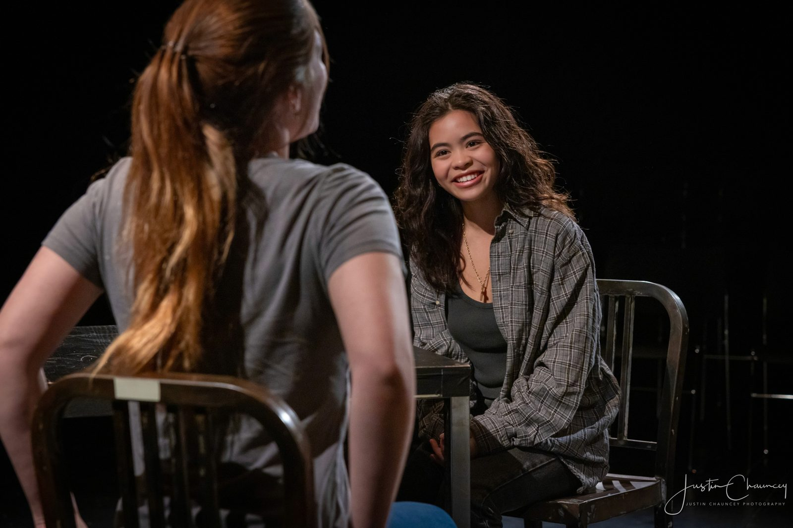
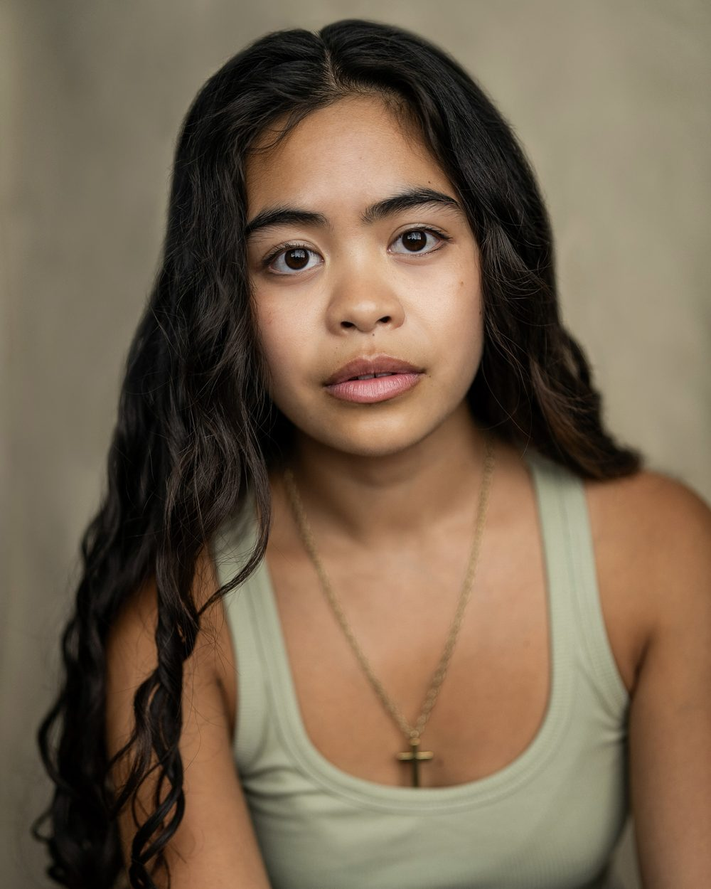
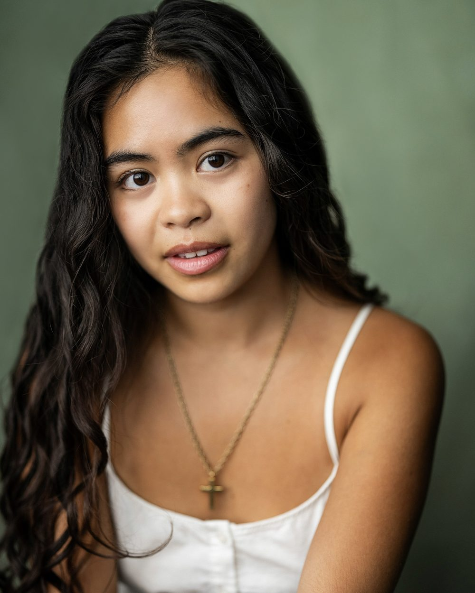
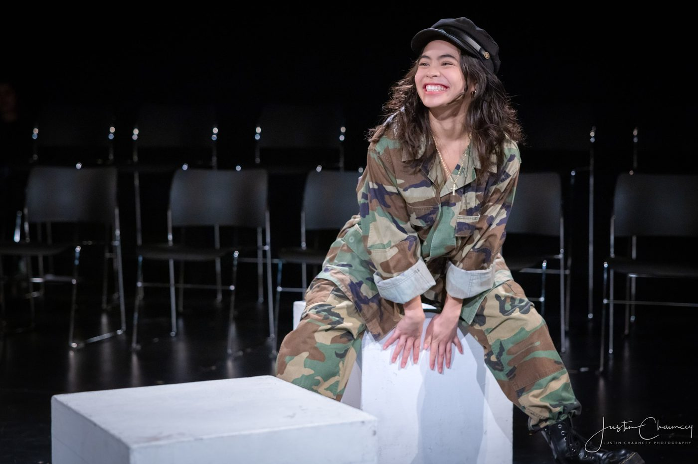
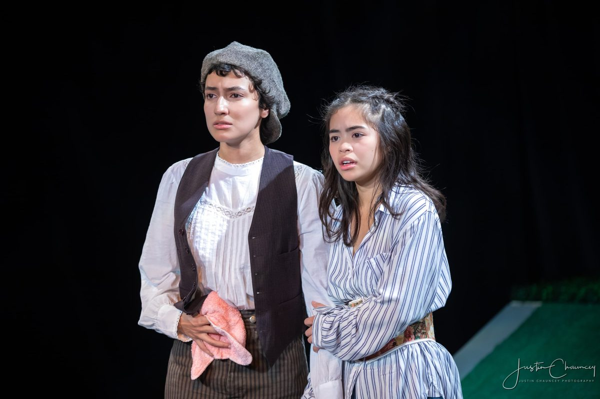
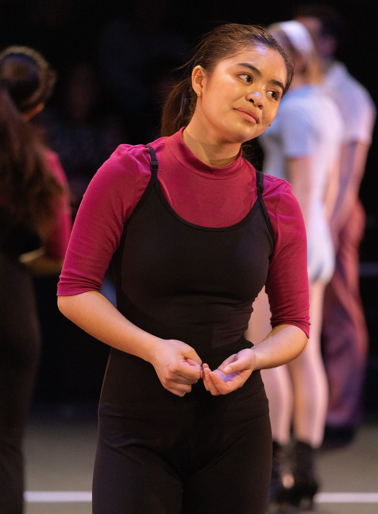
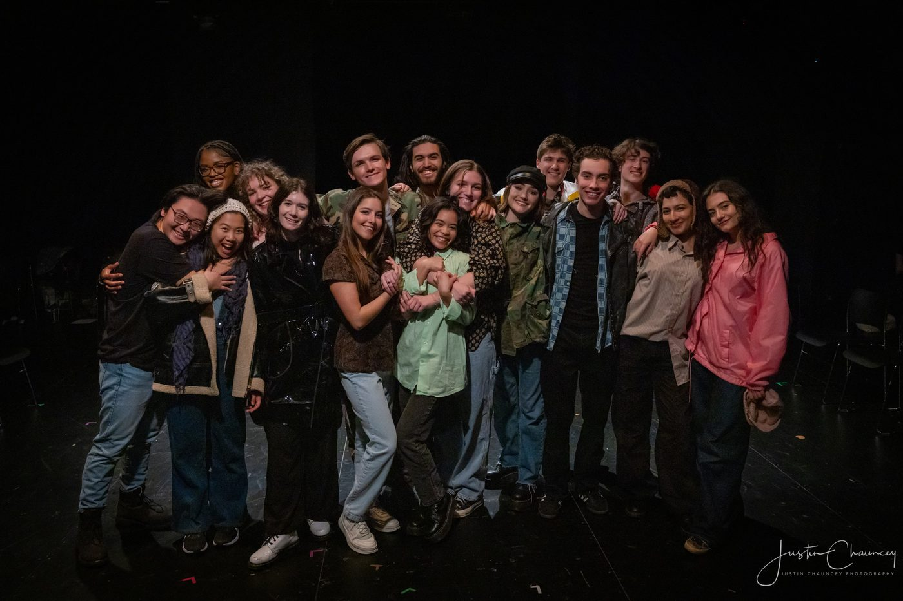

Jennifer is an NYU-trained actress based in NYC & Bay Area, CA
"Jennifer brought a rare combination of discipline and heart to the rehearsal room. Her performance was honest, grounded, and unforgettable — she made every moment feel lived-in."
"Jennifer commands the stage with a quiet intensity that immediately draws you in. She's the kind of actor who not only understands her character — she elevates everyone around her."
"Jennifer’s voice is as expressive as her acting — nuanced, controlled, and emotionally connected. She’s a true storyteller through song."
"Working alongside Jennifer was a masterclass in generosity and presence. Whether center stage or in a group scene, she gives 100% without fail."
"Jennifer doesn’t just play roles — she breathes life into them. As a writer, seeing her interpret my work was a gift. She found layers I didn’t even know were there."



Jennifer is a Filipina-American actress and writer who brings fierce heart and versatility to every role she inhabits.
Born and raised in the Bay Area and trained at NYU Tisch, Jennifer’s performances are rooted in authenticity, movement, and a deep sense of purpose. She has trained across celebrated programs including the New Studio on Broadway, The Meisner Studio, and a Berlin-based intensive in Stanislavski and Brecht methodologies.
Whether embodying raw vulnerability in Balm in Gilead or ensemble precision in A Chorus Line, Jennifer’s work has earned recognition from the Kennedy Center American College Theater Festival and the NYU Tisch Department of Drama, where she received the Outstanding Achievement in Studio award.
Now based in both New York City and California, she continues to explore roles that challenge, connect, and inspire.



